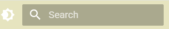

MkDocs Material 主题配色¶
Material for MkDocs 的配色原理、基础用法与进阶自定义方法，适合自定义品牌色、调和阅读体验以及设置深浅模式切换。
基本理念
Material for MkDocs 遵循 Google Material Design 规范，拥有一套内置调和的主题色板，并允许用户通过简单配置实现明暗模式切换、主色自定义、品牌配色替换。
配色基本用法
设置主色与点缀色
在 mkdocs.yml 直接设置主色和点缀色：
theme:
name: material
palette:
- scheme: default # 浅色模式
primary: indigo # 主色支持诸如 indigo, teal, orange 等色名
accent: pink # 点缀色
- scheme: slate # 深色模式
primary: indigo
accent: pink
主色与点缀色支持色名及预览（点击展开）
red
pink
purple
deep purple
indigo
blue
light blue
cyan
teal
green
light green
lime
yellow
amber
orange
deep orange
brown
grey
blue grey
black
white
配色明暗模式自动切换
可以设置主题自动根据系统（或浏览器）明暗偏好来同步切换：
theme:
palette:
- media: "(prefers-color-scheme: light)" # 当用户的操作系统、浏览器“偏好配色方案”为“浅色模式”时，（比如 Windows/Mac 设置了浅色主题，或者浏览器是浅色），就用这套配色（scheme: default）
scheme: default
toggle:
icon: material/brightness-7
name: 切换为深色
- media: "(prefers-color-scheme: dark)" # 当偏好为暗色/夜间模式时，就自动切换到 scheme: slate（深色）。
scheme: slate
toggle:
icon: material/brightness-4
name: 切换为浅色

进阶自定义：自定义品牌配色
如果内置色板无法满足品牌或美学需求，可用 CSS 变量彻底“换肤”。
步骤一：mkdocs.yml 启用 custom 配色
theme:
palette:
- scheme: default
primary: custom # custom 表示使用自定义 CSS 变量
accent: custom
步骤二：extra.css 定义主色、点缀色、背景色
/* =========================
* Light mode（默认主题）
* ========================= */
[data-md-color-scheme="default"] {
/* 主色（Header、主按钮、导航栏等） */
--md-primary-fg-color: #48482D; /* 主背景色 */
--md-primary-fg-color--light: #CECE6B; /* 主色浅色 */
--md-primary-fg-color--dark: #333126; /* 主色深色 */
/* 点缀色（链接、高亮、选中状态等） */
--md-accent-fg-color: #CECE6B; /* 默认强调色 */
--md-accent-fg-color--light: #48482D; /* 强调色浅色 */
--md-accent-fg-color--dark: #333126; /* 强调色深色 */
/* 页面默认背景色 */
--md-default-bg-color: #f7f8fa;
}
/* h1标题颜色 */
[data-md-color-scheme="default"] .md-typeset h1 { color: #48482D; }
还可以通过.md-typeset 来自定义标签的对应颜色
深色主题也能定制
/* =========================
* Dark mode（slate 主题）
* ========================= */
[data-md-color-scheme="slate"] {
/* 主色（Header、主按钮、导航栏等） */
--md-primary-fg-color: #E6E4BF; /* 主背景色 */
--md-primary-fg-color--light: #E2E788; /* 主色的浅色，用于 hover 等 */
--md-primary-fg-color--dark: #636309; /* 主色的深色，用于强调 */
/* 点缀色（链接、高亮、选中状态等） */
--md-accent-fg-color: #636309; /* 默认强调色 */
--md-accent-fg-color--light: #E2E788; /* 强调色浅色 */
--md-accent-fg-color--dark: #E6E4BF; /* 强调色深色 */
/* 页面顶栏文字 */
--md-primary-bg-color: #1E2129;
}
完全自定义主题方案
你还可自定义命名皮肤：
theme:
palette:
- scheme: youtube
primary: custom
accent: custom
[data-md-color-scheme="youtube"] {
--md-primary-fg-color: #EE0F0F;
--md-primary-fg-color--light: #ECB7B7;
--md-primary-fg-color--dark: #90030C;
}
进阶提示
- 自动色调（slate）：深色 slate 方案可用
--md-hue: 210;快速整体冷暖调节。 - 官方变量一览：如需彻底定制所有区块色，参考文档里的变量名。
- 只用 CSS 变量而不动
body、html，可兼容所有主题和色彩切换。
配色推荐
- 别用纯白/纯黑做背景，推荐淡灰、暖白或米色。
- 主色/高亮色建议同色系搭配，避免太强对撞。
- 颜色查找，Coolors配色器、Material配色。